Azure Sentinel Plugin for Log Shipper
This document explains how to configure your Azure Sentinel integration with the Log Shipper module of the Netskope Cloud Exchange platform. This integration allows ingestion of Netskope events and alerts into an Azure Sentinel tenant.
A Netskope Tenant (or multiple, for example, production and development/test instances).
A Netskope Cloud Exchange tenant with the Log Shipper module already configured.
An Azure Sentinel instance.
Obtain the Azure Sentinel Workspace ID and Primary Key.
Configure the Azure Sentinel plugin.
Configure Log Shipper Mapping Files.
Configure Log Shipper Business Rules.
Create Log Shipper SIEM mappings.
Validate the plugin.
Click play to watch a video.
Go to your Azure Sentinel instance https://portal.azure.com/.
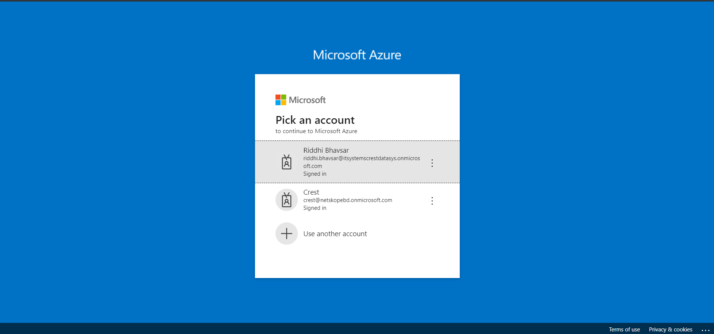 Log in to your Sentinel instance.
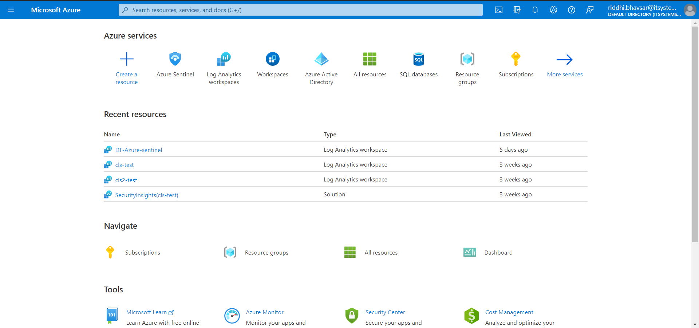 Under the Azure Services section click More Services.
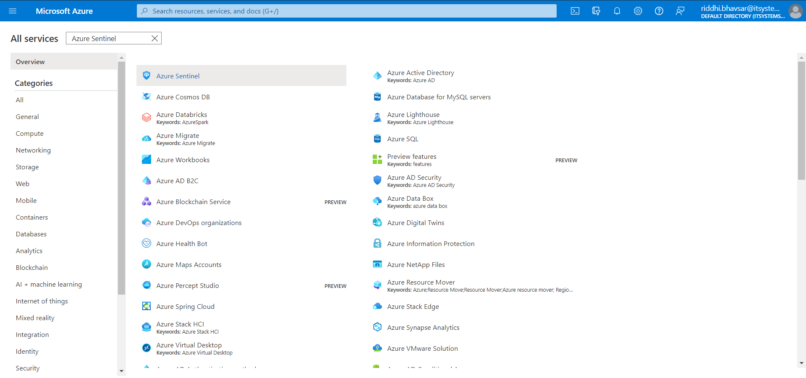 Find and click Azure Sentinel.
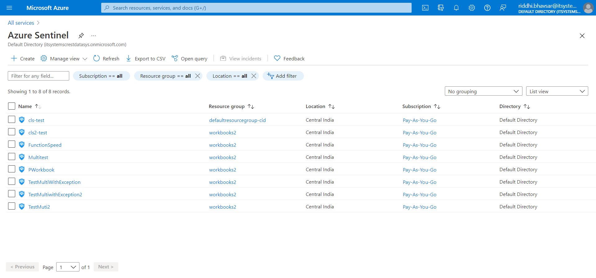 Click Create.

Click Create a new workspace. Select Resource Group, enter a name, and select your Region. Click Review + Create.
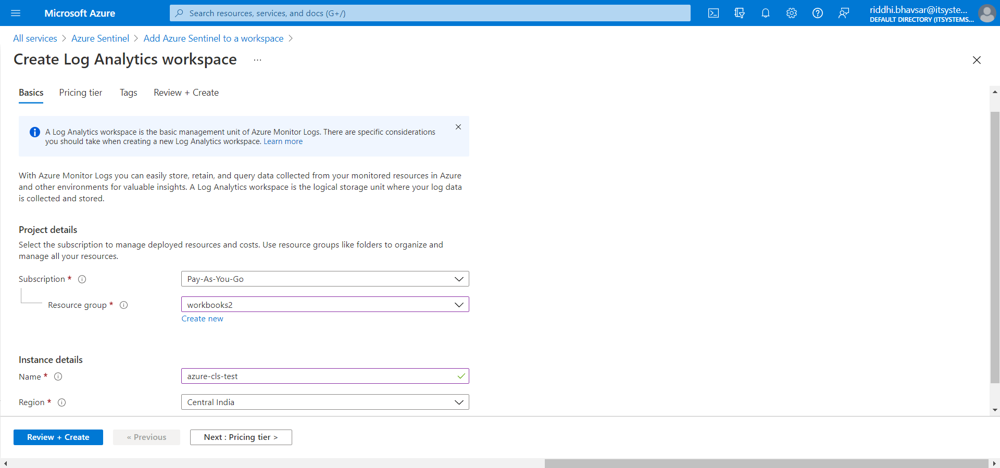 Click Create.
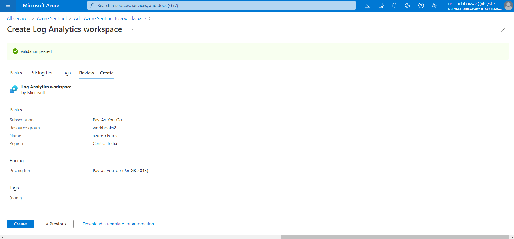 It will take a few seconds to deploy. After deployment succeeds, click Refresh. Click on the Workspace that you created and click Add.
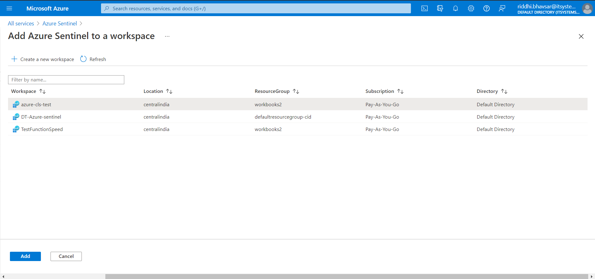 It will take a few seconds to add a workspace.

After successfully adding a workspace, go to Home All Services Log Analytics workspaces.
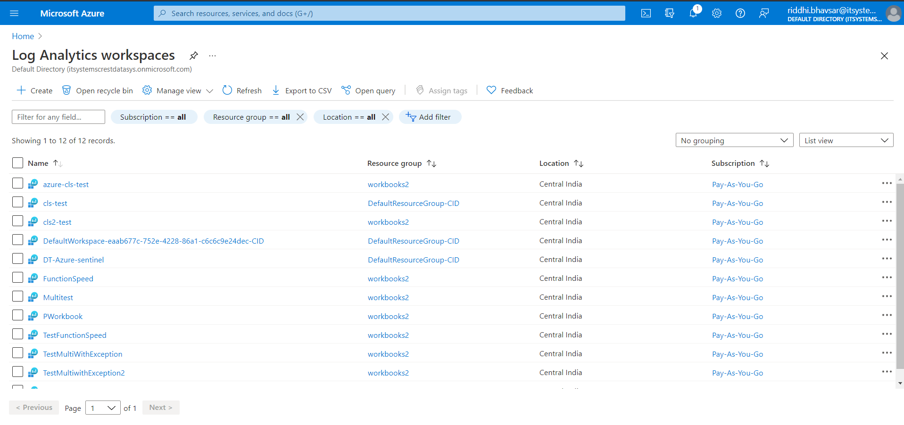 Click on the workspace name that you created.

Click on Agent Management.
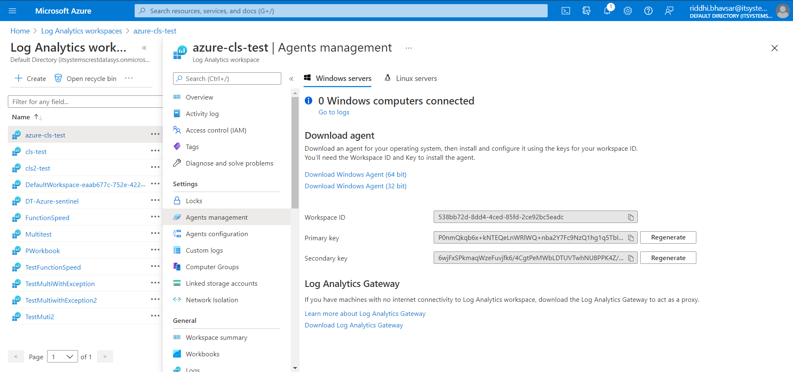 Copy and save the Workspace ID and Primary Key.
Go to Settings and then Plugins.
Select the Azure Sentinel box to open the plugin creation dialog.
Enter a Configuration Name.
Select the valid Mapping. (Default Mapping for all plugins are available. If you want to Create New Mapping, follow the CLS guide to Create New Mapping.)
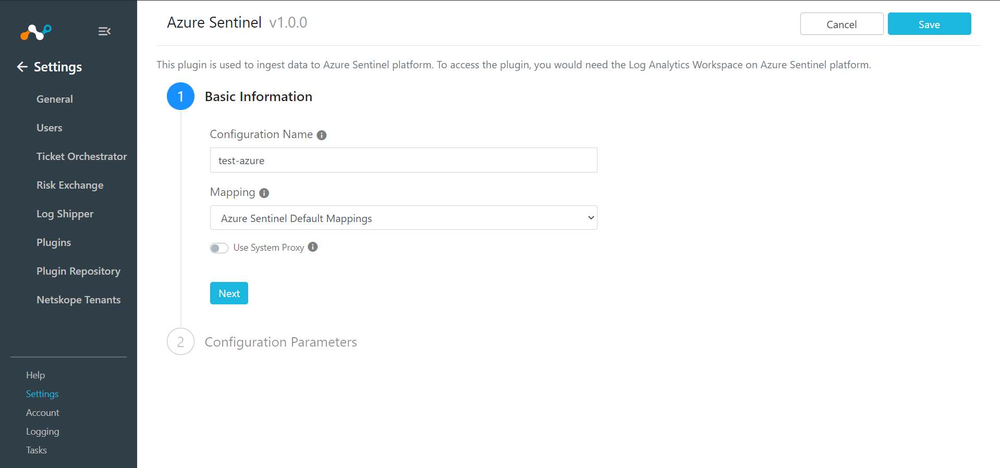 Click Next.
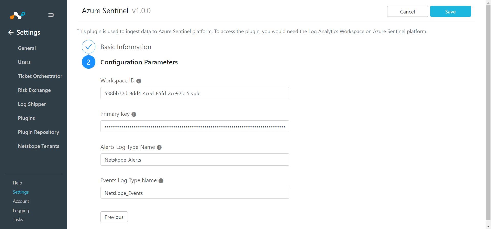 Enter Workspace ID, Primary Key, Alert Log Type Name (Based on this name, schema for alerts will be created in Log Analytics Workspace with suffix "_CL" (default: Netskope_Alerts) and Event Log Type Name (Based on this name, schema for events will be created in Log Analytics Workspace with suffix "_CL" (default: Netskope_Events)
Click Save.
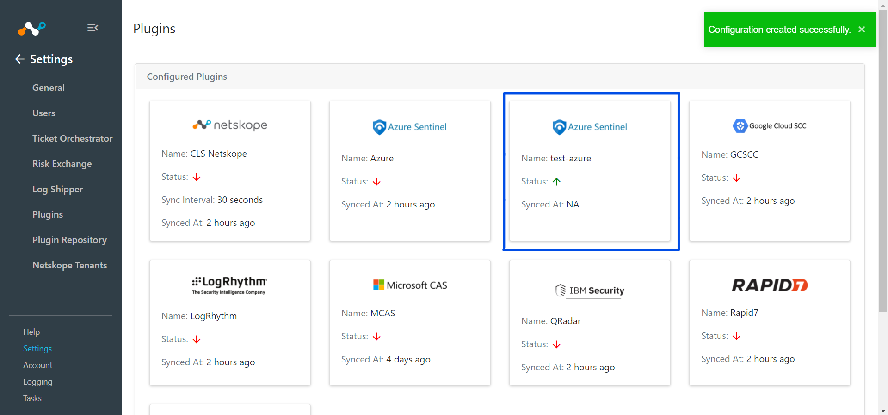
Log Shipper comes with a default mapping file for Azure Sentinel plugin. If you need all the fields in Netskope alerts and events to be ingested on Azure Sentinel, then do not make any changes to this default mapping file.
If you want only specific fields of alerts and events to be ingested on Azure Sentinel, then create a new mapping file and add those fields into the contents of the default mapping file so Log Shipper will ingest only those particular attributes.
Skip this step if you do not want to filter out alerts or events before ingestion.
Go to Log Shipper > Business Rules.

Click Create New Rule.

Enter a Rule Name and select the filters to use.
Click Save.

Go to Log Shipper > SIEM Mappings and click Add SIEM Mapping.
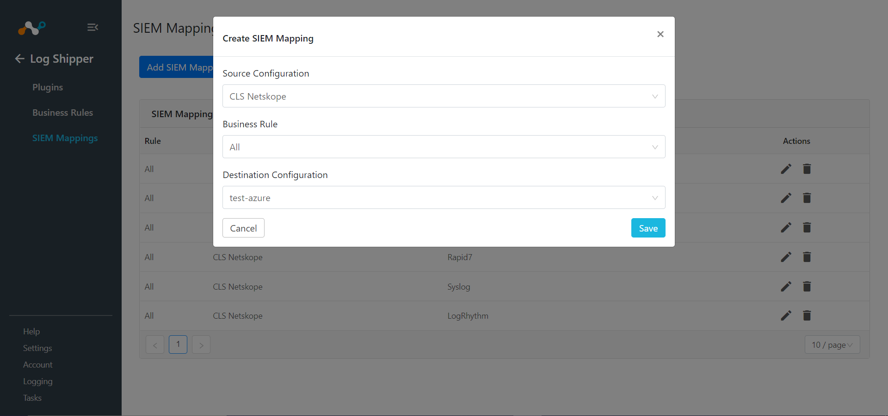 Select a Source Configuration, Business Rule, and Destination Configuration.
Click on Save.
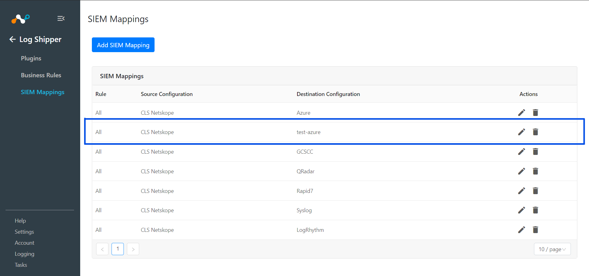
To validate the plugin workflow, you can check from Netskope Cloud Exchange and from Azure Sentinel instance.
To validate from Netskope Cloud Exchange:
Go to Logging.
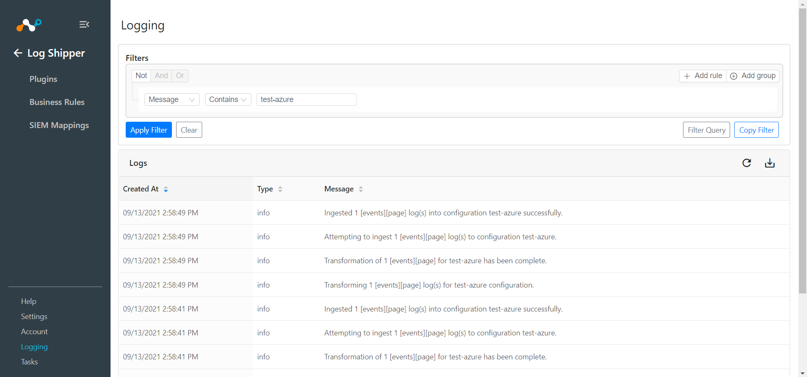
To validate from the Azure Sentinel instance:
Go to Home All Services Log Analytics workspaces.
Click on the workspace name that you created.
Click Logs.
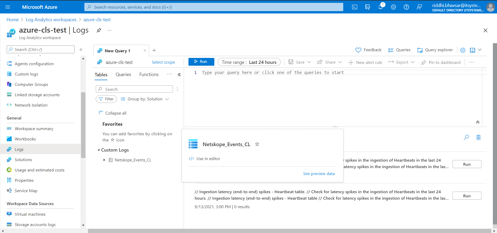 Hover over Custom Logs Netskope_Events_CL and click See preview data, or you can write your query to filter data.
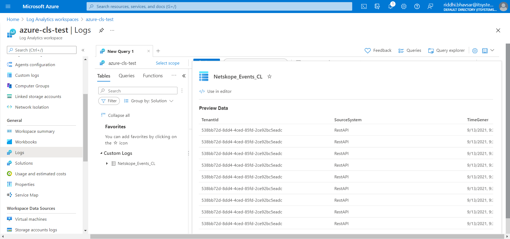